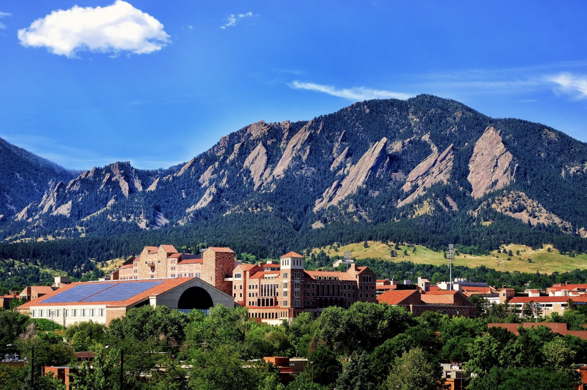
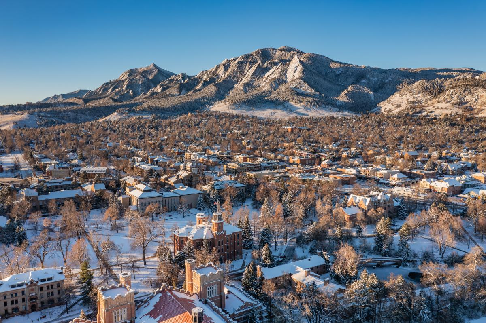
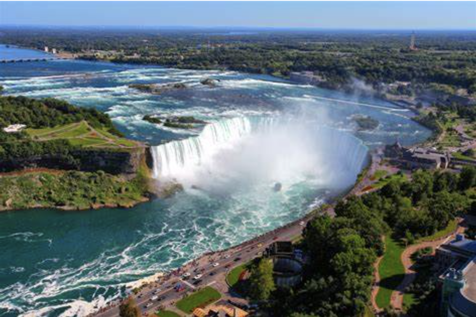
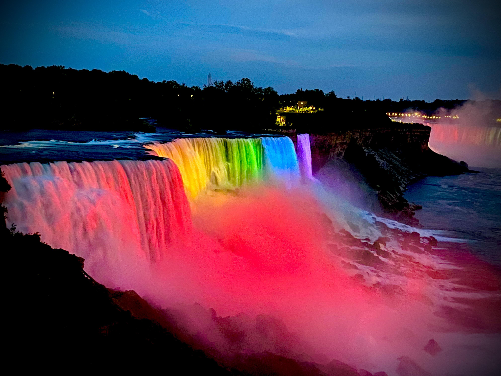
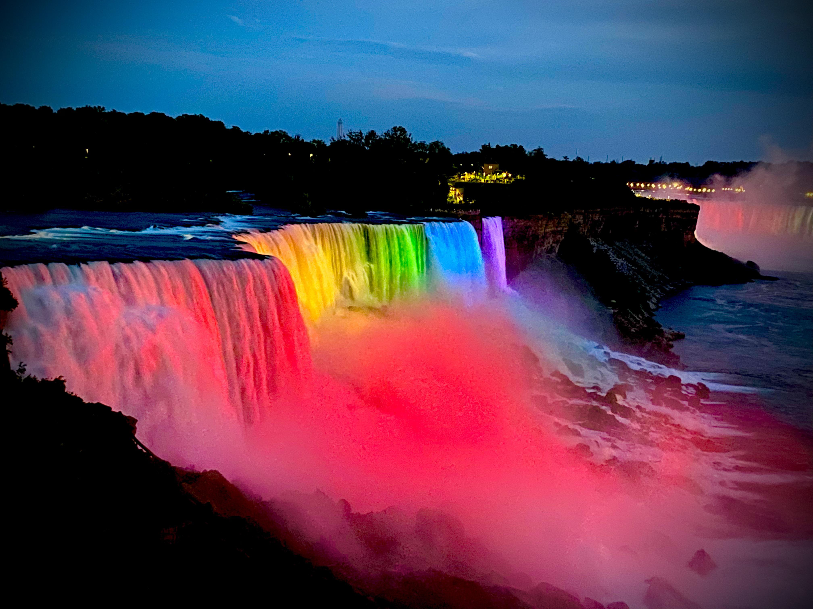

Yellow Stone National Park

Geographical Location: Wyoming
Yellowstone National Park is a nearly 3,500-sq.-mile wilderness recreation area atop a volcanic hot spot. Mostly in Wyoming, the park spreads into parts of Montana and Idaho too. Yellowstone features dramatic canyons, alpine rivers, lush forests, hot springs and gushing geysers, including its most famous, Old Faithful. It's also home to hundreds of animal species, including bears, wolves, bison, elk and antelope.
Photo Gallery


Boulder Colorado
Geographical Location:Colorado
Boulder, Colorado is where the Buffalo Roam. There are many hiking locations near the city center, most notably Chautauqua Park.Boulder, Colorado is a small city of about 104,000 people, about a quarter of which are students that attend the University of Colorado. They city is a vibrant start-up hub that is a center for technology and innovation much like Ann Arbor is.
Photo Gallery

Niagra Falls
Geographical Location:North America
Niagara Falls is located on the border between Canada and the United States. Connecting Lake Erie and Lake Ontario, Niagara Falls has the highest flow rate of any waterfall in North America. Niagara Falls draws in thousands of visitors every year, and for good reason. As such, there are numerous things that you can see while you visit the falls, and it is very easy to make a full trip out of seeing this wonderful sight.
Photo Gallery
 
